North Peak form study: M0 / V1 / V2 / V3
The incremental overlay works and is safe: empty-overlay parity, exact protection of every constrained cell, no new sinks or rerouting, deterministic output. As art, this first study does not yet meet the bar. The sculptable faces are the ones nobody sees from today's approaches, C1 reads as a stamped bowl from the air, and G1 shows a mask artefact.
feature/geo-r02c-a1a-form-study from the approved A1-D checkpoint 15c0977 (R1 b6784a9 and P0 90d0cb7 verified as ancestors). Variants are exact float32 patches on the immutable R1 grid (public/geo-r02c-a1a/); the viewer composes them only with ?terrain=a1a-v1|v2|v3|m0 and refuses any composition whose SHA-256 differs from the manifest. Generated terrain is everything rendered or plotted as solid lines here; authored design targets appear only as dashed lines in the sections.1. Verdict at a glance
| Criterion | V1 · ridges | V2 · + C1 | V3 · + G1 |
|---|---|---|---|
| Silhouette meaningfully more distinctive | No from Birchwood, the valley shoulder, High Tarn or the trail (frozen faces). Slightly sharper A1 east face from the north and east obliques only. | As V1; C1 adds a hollow on the east face visible only from the air and the east. | As V2. |
| Ridge branches read as connected natural structures | A1 and the A2 north-east face only; A3 and the A2 south-west face cannot be sculpted (99.8 % and 31 % protected). Soft couloir hollows where faces meet; no artefacts after the face gate. | Same arms; C1 headwall continues the A1 east face. | Same. |
| C1 glacial landform, not an artificial depression | n/a | Partly. From its floor the headwall reads as a real amphitheatre wall. From the elevated obliques it reads as a rounded, rimmed bowl stamped into a planar face. The section matches the A1-D design. | As V2. |
| G1 real mountain gully | n/a | n/a | No. Fill-only V (0 to +14 m) on a shallow host valley reads as mounds, and a serrated wall where steep walls meet the rasterised frozen channel section (a mask artefact). Kept as a diagnostic checkpoint. |
| Geographic coherence | Yes: all checks pass, no rerouting, no sinks. | Yes, hydrologically; visually C1 sits on the face rather than in a valley head. | Hydrologically yes; visually no (G1 artefact). |
| Appealing from player height | Unchanged from existing player positions (Birchwood, valley shoulder, High Tarn, trail). | Only inside C1 (no route reaches it). | G1 view worse than M0. |
Recommendation: accept the overlay mechanism and its validation as the platform for A1; do not accept V1, V2 or V3 as landforms yet. The decisive constraint is protection geometry. The trail corridor, crest bands and divide guards freeze exactly the south and south-west faces that the approaches see, so the visible silhouette cannot change without an art-direction decision on those protections.
2. Real renders from fixed viewpoints
Same cameras, viewport (1280 × 800), sun presets and materials for every variant; walk cameras stand 1.75 m above the loaded variant's ground. Pick a viewpoint and a lighting mode, then two variants to compare.
3. Terrain difference and form maps (top-down, x −900…1000, z 2150…3300)
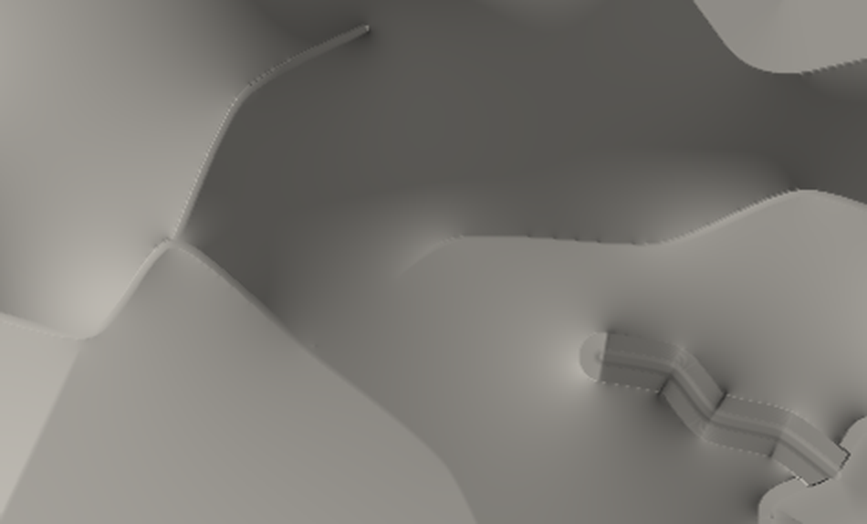
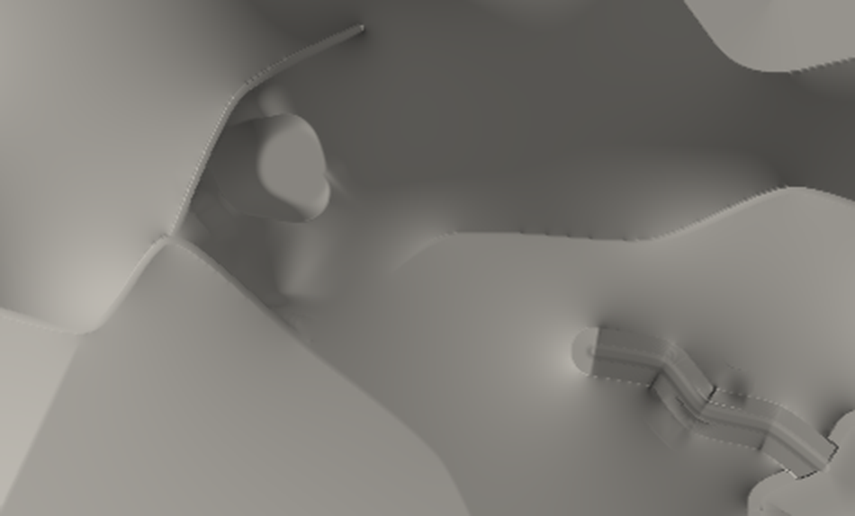
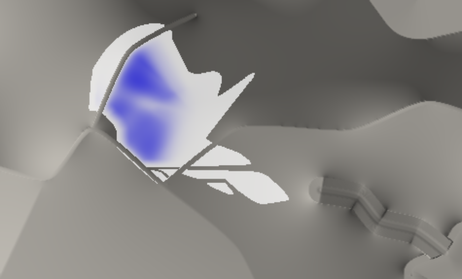
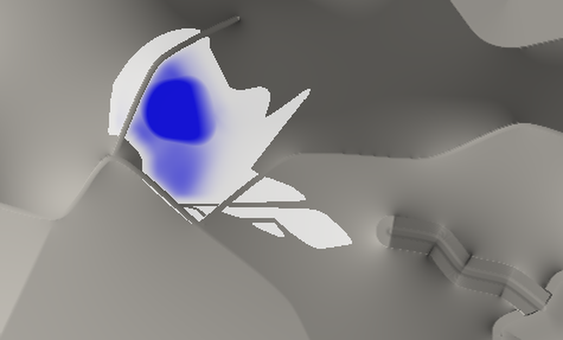
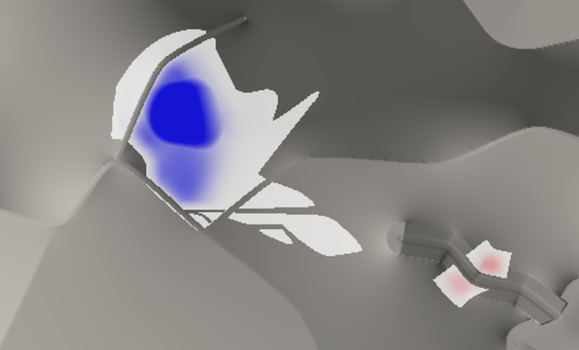
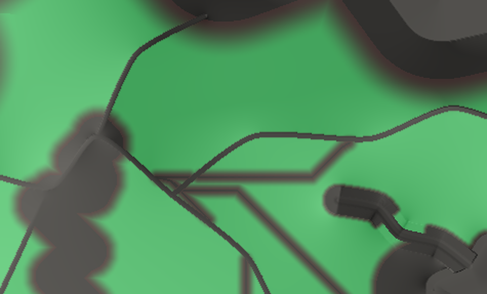
4. Matched cross-sections
Solid = generated terrain (M0 grey, V1 blue, V2 orange, V3 green; later variants overdraw earlier ones where identical). Dashed black = approved A1-D design target. True scale unless stated.
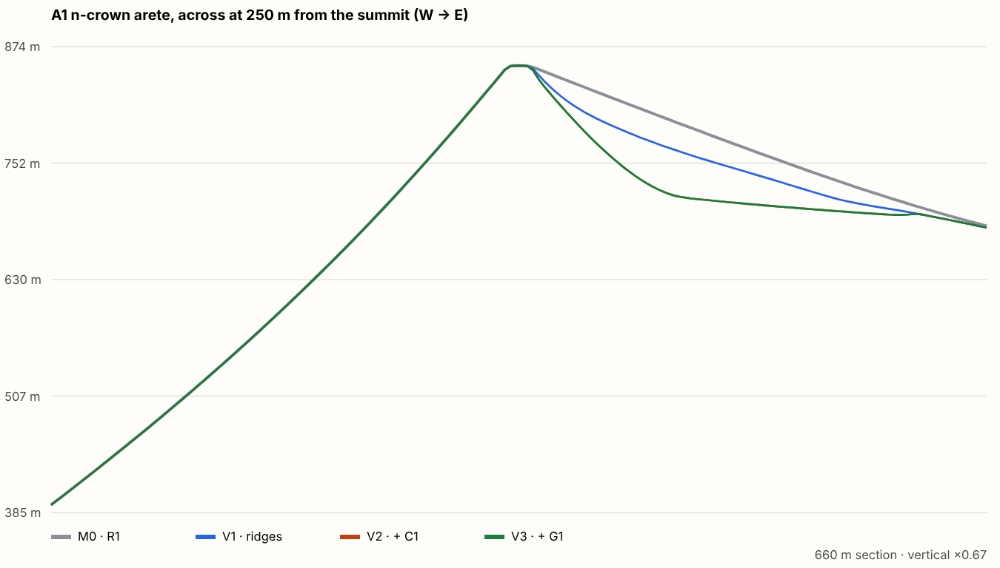
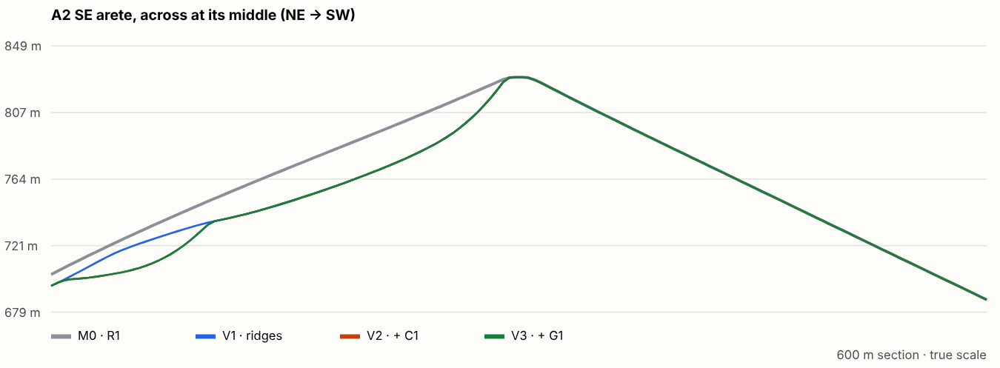
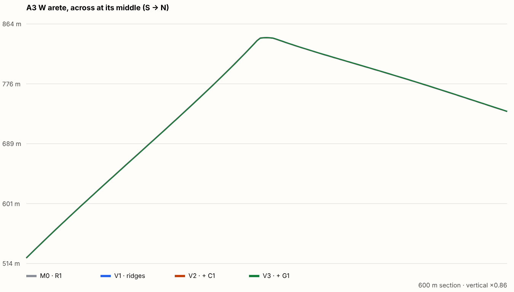
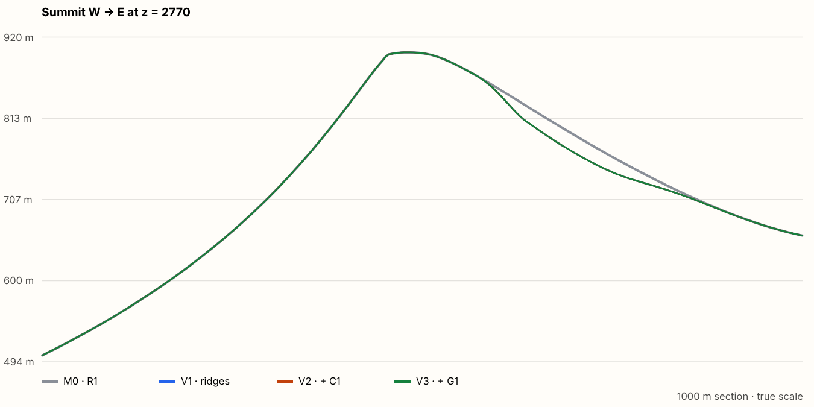
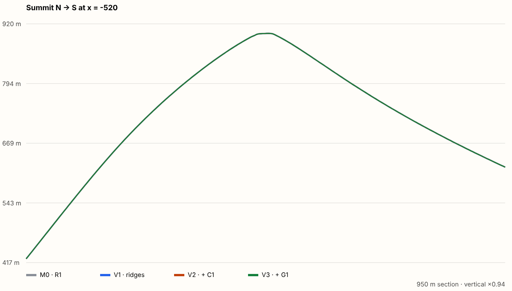
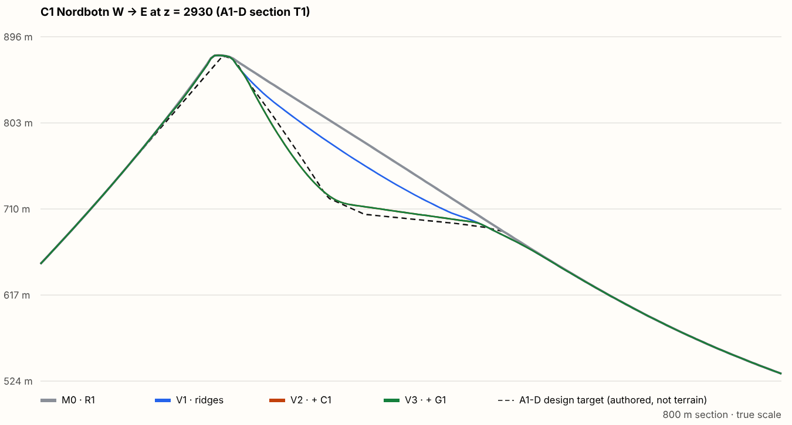
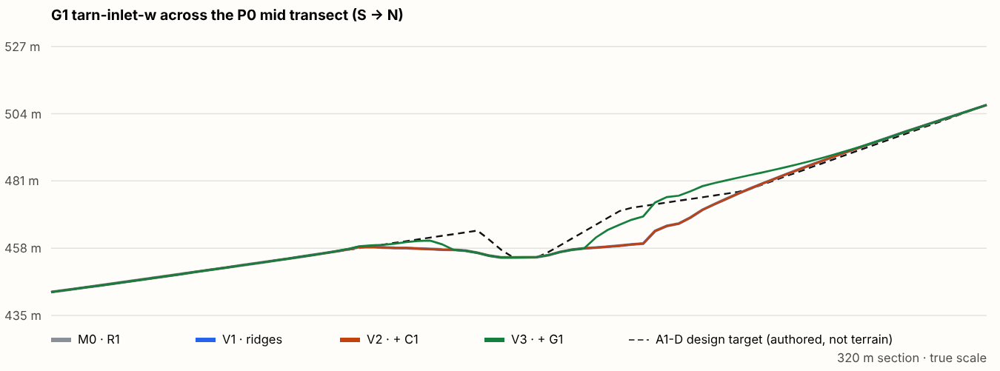
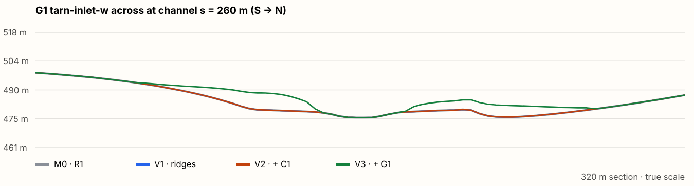
5. Geographic and hydrological validation
| Variant | Terrain SHA-256 | Changed cells | ha | Δ min / max (m) | Protected unchanged | New dry sink cells | Wet cells changed | Cells rerouted | Trail centreline Δ (m) | Coast 0–150 m changed | Max |∇Δ| | Result |
|---|---|---|---|---|---|---|---|---|---|---|---|---|
| M0 · R1 as committed (empty overlay) | fc8fd6da0472bc3e… | 0 | 0.0 | 0.0 / +0.0 | ✔ | 0 | 0 | 0 | 0 | 0 | 0.00 | pass |
| V1 · ridge and flank sculpting | 61b599545d60f9bf… | 16,694 | 26.71 | -30.6 / +0.0 | ✔ | 0 | 0 | 0 | 0 | 0 | 1.20 | pass |
| V2 · V1 + C1 Nordbotn | e012c711a7e9e62b… | 16,694 | 26.71 | -82.8 / +0.0 | ✔ | 0 | 0 | 0 | 0 | 0 | 1.87 | pass |
| V3 · V2 + G1 gully study | 8d81f9fca284d69a… | 18,096 | 28.95 | -82.8 / +14.4 | ✔ | 0 | 0 | 0 | 0 | 0 | 1.87 | pass |
Protected classes checked cell by cell: sea, lakes, channel sections, valley floors (except the declared G1 release), other R1 equality cells, crest lower-bound bands, trail corridors, frozen zones, catchment divides off the crests, and every cell with an R1 water surface. Also: crest cells never below bound, land/sea sign unchanged, the outside of the window box byte-identical. Independent check in tests/geo-r02c-a1a.test.ts: the P0 priority flood gives maximum spill depth = R1's 0.033 m and zero new cells over 1 cm for every variant.
6. Parity, determinism and cost
fc8fd6da0472bc3eda7dd9d1f2f8f9bfd15b2bb55998db1333cbd6256b1f946a = canonical R1. The TypeScript test composes M0 through the viewer's code path and gets the same hash.7. Remaining defects, trade-offs and recommendations
Defects found (generated terrain)
- C1 reads as a stamped bowl from the air. R1's east face is a uniform planar slope with no valley head, so any bowl cut into it exposes its rim on all sides. A convincing cirque must span the full width between the A1 and A2 arêtes, so its rim is the arêtes. Its headwall also needs structure (ribs, couloirs, talus) rather than a smooth surface.
- G1 serrated wall. Steep walls start right at R1's frozen channel section, which is rasterised as a staircase on this diagonal reach, and the 4 m fade lets the staircase through. A ≥ 12 m fade (a wider floor) or a smooth vector channel boundary would remove it.
- G1 reads as mounds. The reach lies in a valley only 5–12 m deep, so with the bed fixed a V can only be built by filling (0 to +14 m). Half the reach is also frozen by the High Tarn seam zone (approved r 185 m).
- Camera placement. From the summit dome, and from the frozen ±10 m crest cap of A1, the convex cap hides the face below, so C1 cannot be seen from the summit area at eye height. It is judged from its floor, its lip and the east oblique.
Trade-offs that are decisions, not bugs
- Trail corridor freeze (±75 m, 60 m fade) covers the summit's whole south face and A3's south face. With it, the silhouette from the south and south-west cannot change. Options: (a) keep it, and accept that A1 is a north/east-side study; (b) narrow it near the summit to centreline ± 12–20 m with a passability gate; (c) move the summit reveal to A2.
- Crest bands are lower bounds (±10 m frozen). Crest irregularity (steps, towers) needs raises, which you have not approved. Without them the arêtes keep R1's smooth crest profile.
- Face gate (≥ 75 % unprotected). This prevents mask-shaped cuts but excludes A2 south-west and A3. It is a parameter you can review.
- Production builds copy
public/geo-r02c-a1a/(1.1 MB) intodist. This needs a decision before any deploy (none is authorised).
Recommendations for the next gate
- Approve the overlay platform (mechanism, mask, validation, tests) as the basis for A1.
- Decide the protection question first, because it determines whether the approaches can ever see the change. Recommended: option (b) for the summit block plus a passability test, and keep the rest.
- Redesign C1 as a valley-head amphitheatre spanning A1–A2 (rim = arêtes, opening ENE), with headwall structure. Re-check against the 85 m envelope.
- Replace G1's reach, or its approach: test on a reach with ≥ 25 m of side relief, and use a ≥ 12 m channel-edge fade. Do not generalise the gully method yet.
- Add one or two player-height viewpoints that actually see the north/east faces (for example an A2 route candidate), or the study cannot be judged from player height.
Stopped for independent artistic and technical review
A1a study only. C2-a, B1–B3, towers, A2/Cairn Saddle, coast refinement and nature assets were not started. Nothing was merged, deployed or pushed.